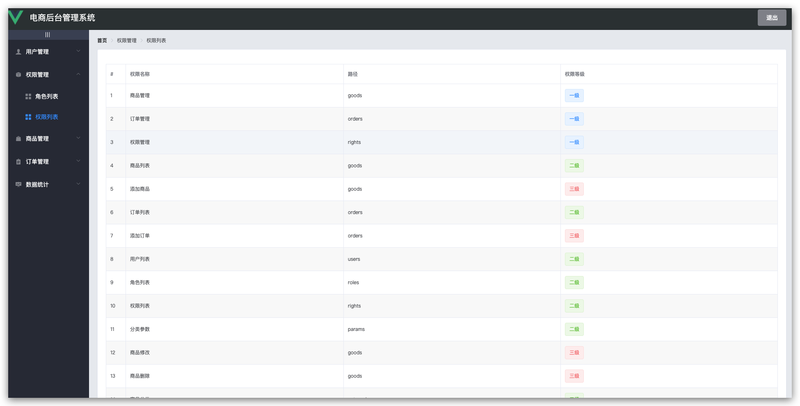
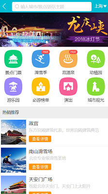

-
- Educational.教育背景
- 学历: 2015.9 ~ 2019.6 周口师范学院 网络工程专业（统招本科）
- 主修课程：网页设计，计算机网络，计算机组成原理 , 数据结构 ，线性代数 ，无线网络技术 ，组网技术, C ，Linux ，Mysql ，Oracle等
-
- Experience.工作经验
-
安能（上海）物流
时间：2019.7 ~ 2020.4（9个月）
岗位：统计分析
职责：报表分析
-
- Skill.技能清单
-
熟悉 H5+Css3 的新增内容，能配合UI，根据Psd高度还原设计稿
熟悉Http协议，Web标准及Css预处理器(Less)的使用
熟练使用Vue全家桶（vue-router、vueX、axios 等）
熟悉Git，Vscode，Chrome，Postman等开发工具的使用
熟悉移动端开发技巧，Flex+rem布局，能根据不同设备编写兼容代码
了解后台语言node。了解Linux基本命令。了解微信小程序/公众号
-
- Experience.项目经验
-
电商管理系统 http://alexlxy.club/vue-shop 预览
自己动手写的一个后台管理系统，通过该项目熟悉了一套系统的开发流程，设计->开发->联调->测试->部署，能熟练使用vue + elementUI进行业务需求的开发 技术栈：Es6，Vue，VueRouter，VueX，Axios，ElementUI，Less
 -
我的在线简历 http://alexlxy.club 预览
一个优雅简洁的在线个人简历，将个人能力及项目经验在线展示出来 技术栈：Html5 + Css3
-
Vue仿去哪了app主页 http://alexlxy.club/travel 预览
结合视频教程及Vue官方文档，通过仿去哪了app主页熟悉了vue的常用Api，了解了vue的生态系统，能灵活使用vueRouter,vueX,Axios进行业务需求的开发 技术栈：Javascript，vueRouter，vueX，webpack，stylus
